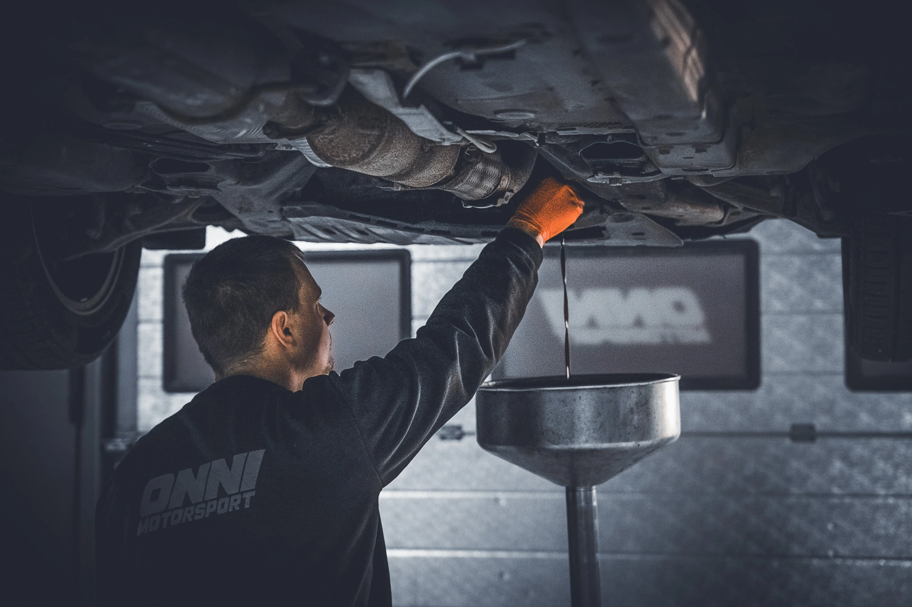

Laadukkaat huolto- ja korjauspalvelut kaikkiin tarpeisiin
Huollot valmistajan ohjeiden mukaisesti. Käytämme vain laadukkaita, alkuperäislaatua vastaavia suodattimia ja nesteitä.
Korjaamme kaikki viat nopeasti ja ammattitaidolla. Annamme aina kustannusarvion ennen suurempien korjausten aloittamista.
Syvällinen vianetsintä, joka paikantaa kytkentäkaavioiden ja laitteiston avulla monimutkaisetkin johdotus- ja ohjainlaiteviat.
Täyden palvelun rengastyöt kausivaihdoista asennuksiin. Ammattimainen tasapainotus ja paikkaus takaavat tärinättömän ajon ja säästävät alustaa
Laturien ja starttien vaihdot sekä sähkövikojen korjaukset. Asennamme ammattitaidolla myös lisävarusteet, kuten valot ja peruutuskamerat
Avaimet käteen -palvelu: teemme ennakkotarkastuksen, korjaamme mahdolliset viat ja käytämme auton katsastuksessa puolestasi.
Maksuton akun kuntotesti ja laadukkaat akut (myös EFB/AGM). Palvelu sisältää asennuksen lisäksi nykyaikaisten autojen vaatiman akun koodauksen.
Tarkka kulmien säätö (auraus, camber, caster), joka vakauttaa ajoa, estää renkaiden epätasaista kulumista ja pienentää polttoaineen kulutusta.
Järjestelmän täyttö, tiiveystarkastus ja puhdistus. Huollamme ja vaihdamme myös kompressorit varmistaaksemme raikkaan ja kylmän ilman
Käytämme vain alkuperäisiä tai OEM-laatuisia varaosia. Tämä varmistaa osien täydellisen sopivuuden, kestävyyden ja takuun säilymisen.
Toteutamme ideasi pohjalta toimivat ja kestävät kokonaisuudet, joissa yhdistyvät käytännöllisyys, turvallisuus ja haluttu ulkonäkö.
Parannamme näkyvyyttä ja turvallisuutta asentamalla LED-paneelit, työvalot sekä ammattikäyttöön vaadittavat varoitusmajakat ja äärivalot.
Asennamme markkinoiden johtavat polttoainekäyttöiset lämmittimet (esim. Webasto) sekä sähkökäyttöiset lohkolämmittimet moottorin ja sisätilojen esilämmitykseen.
Lisäämme ajomukavuutta vaimentamalla rengasmelua ja parantamalla lämmöneristystä, mikä on ihanteellista esimerkiksi retkeilyautoihin.
Asennamme ruostumattomasta teräksestä valmistetut karjapuskurit ja kylkiputket, jotka antavat autolle näyttävän ilmeen ja suojaavat koria kolhuilta.
Toteutamme vaativat sähkötyöt, kuten invertterien, lisäakkujärjestelmien ja muiden erikoisjohdotusten asennukset ammattikäyttöön tai harrastuksiin.
Päivitämme autosi äänimaailman laadukkaammilla kaiuttimilla, vahvistimilla ja subwoofereilla tai vaihtamalla soittimen multimediakeskukseen.
Toteutamme madallukset, korotukset ja jousituksen vahvistukset parantaaksemme auton kantavuutta, maavaraa tai ajo-ominaisuuksia.
Muutamme pakettiautot tehokkaiksi työpisteiksi asentamalla modulaariset hyllystöt (esim. Sortimo) ja räätälöidyt säilytysratkaisut.
Rakennamme täysin uniikit ratkaisut, kiinnikkeet ja laiteintegroinnit silloin, kun valmista vaihtoehtoa ei ole saatavilla.